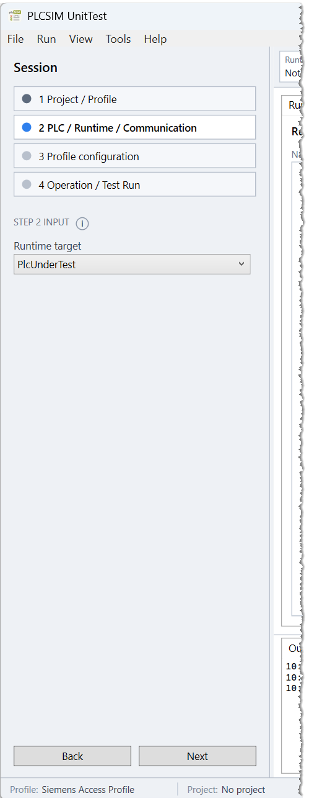
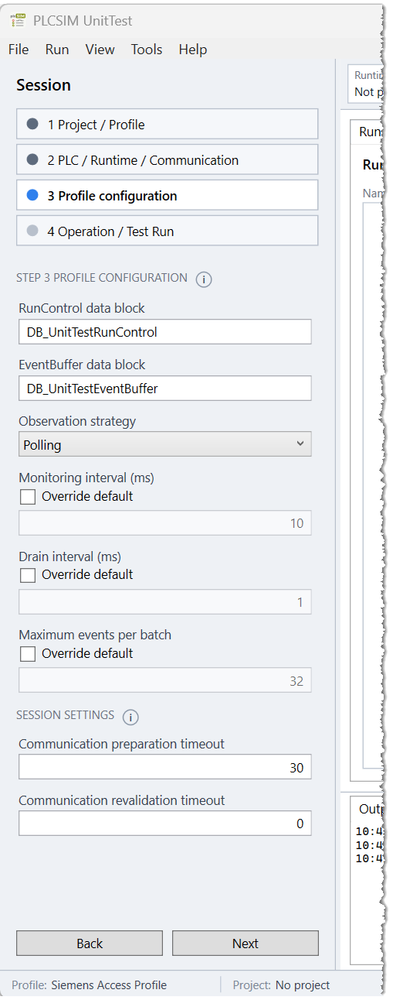
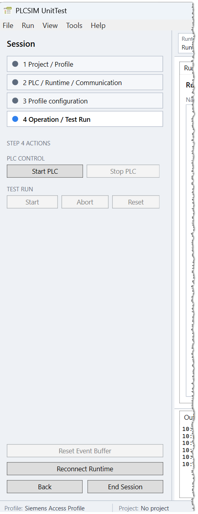

Entry points
Manual setup
Use the sidebar directly when selecting project ownership, profile, targets, and configuration interactively. This is the normal debugging flow.
Import Configuration
File > Import Configuration... loads a JSON configuration as an editable draft and returns to Step 1. Imported values prefill the workflow but do not force project ownership or start preparation.
Load UnitTest
File > Load UnitTest... loads a complete configuration and uses application-managed project handling. It advances through validation, project preparation, runtime preparation, and transfer. On failure, the responsible step remains visible with Output and Diagnostics evidence.
Runtime intent is preserved independently of project handling. Explicit UseExisting resolves the configured runtime or the profile-designated default and retains that resource during cleanup. It still performs the managed build and transfer, which can change the program on that target. Omitted intent defaults to CreateOwned; an existing-target address alone does not request reuse. Unsupported creation and invalid explicit targets stop progression without selecting another mode or runtime.
Step 1 - Project / Profile
Select the access profile and, when used, a project source. The Build and download project checkbox defines project ownership for this WPF session:
After the window opens, the application checks whether the current user's profile registry still matches the installed profile packages. A missing or stale registration is shown directly below Access profile. Use Register now to explicitly refresh the registry and reload the profile list. Opening the application never invokes profile registration automatically.
Tools > Refresh Profile Registrations performs the same explicit refresh later. Registration belongs to the current Windows user and should be repeated after installed profile packages are added, removed, or replaced.
- Enabled
- The application opens the project, discovers PLC targets, builds, transfers, and releases project access after transfer or cleanup.
- Disabled
- Project handling remains external. The application only discovers and prepares runtime communication; the PLC program must already be present on the target.
Next loads the profile and performs the discovery required by Step 2. It does not start the PLC or UnitTest communication.
Step 2 - PLC / Runtime / Communication
Select the discovered PLC target when project handling is application-managed and select the runtime target. Choosing an existing target uses UseExisting. Create own instance is offered only when the profile supports owned creation; any required creation parameters are edited with the profile fields in Step 3.

Next validates selection and opens Step 3 without preparing resources.
Step 3 - Profile Configuration
The selected profile publishes typed fields. WPF renders selection lists, checkboxes, strings, and numeric editors without knowing the profile's JSON paths or vendor semantics.

Next requires both generic field validation and profile validation. It then prepares project and runtime resources and transfers the project when project handling is application-managed.
Safety-program authorization
Before a managed build or transfer, the selected profile may report that Safety-program authorization is not required, requires a password, or is unsupported. WPF prompts only for the password-required case. The masked password remains in memory for the bounded authorization attempt and is not imported from configuration, persisted, logged, or exported.
If authorization fails, the dialog can be opened again by retrying the setup action. Cancel stops the current setup attempt without changing the project. An unsupported result is terminal for the managed project workflow and is shown with the profile or binding diagnostic; it is not converted into a password prompt.
Step 4 - Test Execution
Step 4 is the repeated debugging surface. It exposes PLC control, UnitTest commands, EventBuffer reset, reconnect, and End Session. Continue with Test execution for PLC control and the normal run sequence.

Backward navigation and cleanup
Back and previously reached step headers release resources owned by later steps and retain values that remain safe to edit. The confirmation dialog identifies what will be released. File > End Session releases the complete session and returns to Step 1.
Cleanup retains an existing runtime selected with UseExisting and requests destruction of an application-owned runtime created with CreateOwned. Runtime-only sessions with external project handling do not open, build, or transfer a project.